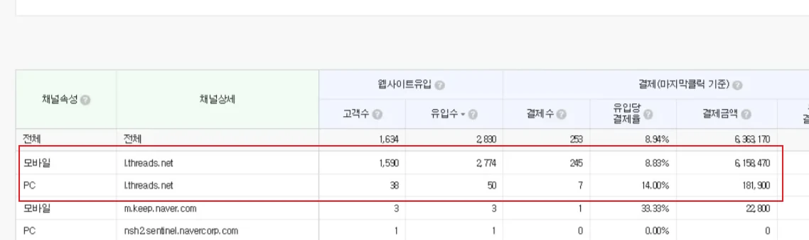
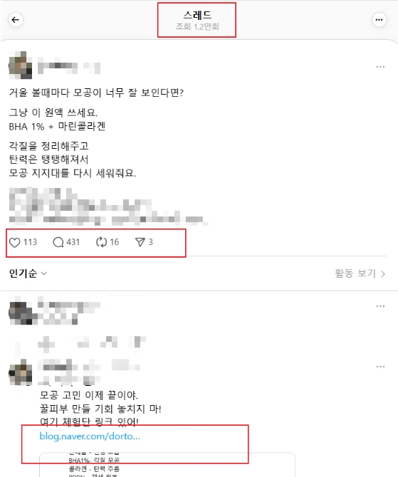
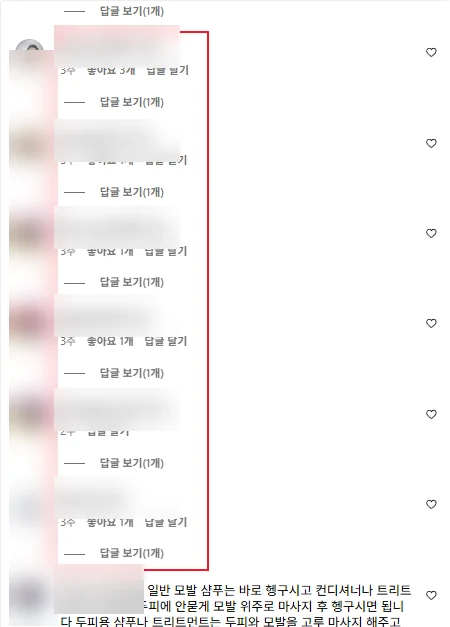
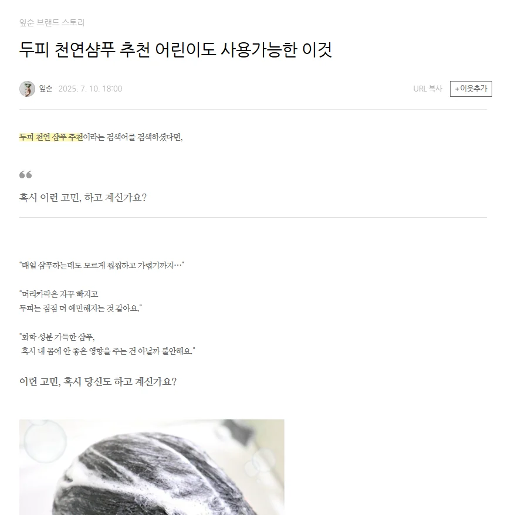
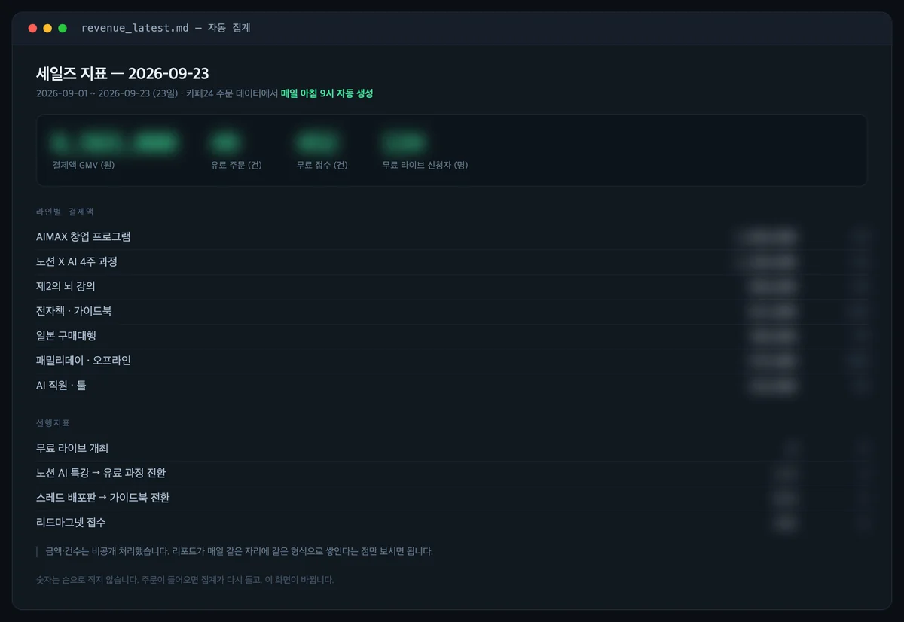
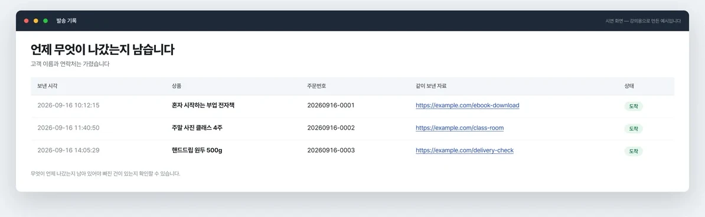

0
먼저 말씀드립니다
저희도 사람을
더 뽑아봤습니다.
그런데 매달 빠져나간 건 월급이 아니라 제 시간이었습니다.
가르칠 시간, 고칠 시간, 그만두면 다시 뽑을 시간.
사람 vs AI 직원
같은 일을
누가 더 싸게 하나.
이 자리를 사람으로 채우면
한 명씩
얼마인지 보겠습니다.

쇼핑몰 CS 담당자
주문 안내 문자·메일을 하루 종일 내보내는 일
사람으로 채우면월 240만 원부터
지금 이 자리는 AI 직원이 일합니다
매출 기록 담당자
주문과 매출을 모아 매일 정리해 보고하는 일
사람으로 채우면월 210만 원부터
지금 이 자리는 AI 직원이 일합니다
네이버 카페 관리자
새 회원을 맞고 댓글을 관리하는 일
사람으로 채우면월 240~280만 원
지금 이 자리는 AI 직원이 일합니다
유튜브 채널 관리자
영상을 올리고 달린 댓글에 답하는 일
사람으로 채우면월 250만 원
지금 이 자리는 AI 직원이 일합니다
글감 수집 담당자
오늘 쓸 만한 소식을 모아 글감으로 정리하는 일
사람으로 채우면월 260~300만 원
지금 이 자리는 AI 직원이 일합니다
시스템 모니터링 요원
멈춘 게 없는지 계속 지켜보는 일
사람으로 채우면월 230~300만 원
지금 이 자리는 AI 직원이 일합니다
월급은 채용 공고에 적힌 금액 기준입니다.
여섯 자리를 사람으로 채우면 월 1,430만원부터 시작합니다.
그래서 사람 대신
직원을 만들었습니다.
여섯 개 팀에 스물네 명.
인건비는 0원입니다. (네, 전부 AI입니다)
AI STAFF
이 중에 누구부터
뽑으시겠습니까.
첫 달은 기초를 같이 밟고,
그다음부터 필요한 직원을 골라서 만듭니다.
//영상 콘텐츠 자동화팀
콘텐츠 기획자잘된 영상·광고를 모아 왜 터졌는지 분석하고, 다음에 뭘 찍을지 정해줘요
정하기
영상편집자길게 찍은 가로 영상을 잘라 자막 붙여 완성해요
만들기
숏폼 영상편집자긴 영상·글을 세로 짧은 영상으로 잘라 만들어요 (만드는 쪽)
만들기
유튜브 채널 관리자유튜브에 올리고, 달린 댓글에 답글을 달아요
올리기
//글쓰기 자동화팀
콘텐츠 에디터오늘 쓸 만한 소식을 모아 글감 목록으로 정리해요 (글은 안 씀)
모으기
블로그 마케터블로그에 올릴 상품 글을 직접 써서 발행해요
쓰기
카페 바이럴 마케터네이버 카페에 올릴 글을 써서 시간 맞춰 발행해요 (쓰는 쪽)
쓰기
출판 편집자쌓인 글을 모아 전자책 원고로 묶어요
묶기
//SNS 자동화팀
SNS 마케터스레드에 글을 올리고 달린 댓글에 답해요
올리기
릴스 PD만들어진 영상에 자막·음성을 붙여 릴스로 올려요 (올리는 쪽)
올리기
네이버 카페 관리자네이버 카페에 새로 온 회원을 맞고 댓글을 관리해요 (응대하는 쪽)
응대
카카오톡 오픈채팅방 관리자오픈채팅방에 공지·홍보를 제시간에 올려요
올리기
//디자인 자동화팀
그래픽 디자이너브랜드 이름으로 로고 시안을 만들어요
만들기
SNS 콘텐츠 디자이너글을 카드뉴스 이미지로 만들어요
만들기
PPT 디자이너내용을 발표용 장표로 정리해요
만들기
상세페이지 디자이너원고와 사진으로 판매 상세페이지를 만들어요
만들기
//고객·주문 자동화팀
쇼핑몰 CS 담당자주문이 들어오면 상품별 안내 문자·메일을 보내요
응대
쇼핑몰 운영 관리자하루 주문·매출을 모아 아침에 보고해요
보고
퍼포먼스 마케터어느 링크·채널에서 팔렸는지 기록해 알려줘요
보고
출고·배송 관리 담당자배송 준비 주문을 배송 완료로 바꿔요
처리
//업무관리 자동화팀

운영 매니저뽑은 할 일을 담당자에게 배정하고 완료를 챙겨요
배정
시스템 모니터링 요원다른 AI 직원이 멈췄는지 지켜봐요
감시
IT 운영 담당자멈춘 AI 직원을 다시 일하게 고쳐요
복구
직원 사진은 AI로 만든 이미지입니다.
AI 직원 양성학교
지금 저희 회사에서
매일 출근합니다.
졸업할 때 손에 남는 것
사장 한 명 밑에
스물네 명이 붙습니다.
영상 콘텐츠
콘텐츠 기획자영상편집자숏폼 영상편집자유튜브 채널 관리자
글쓰기
콘텐츠 에디터블로그 마케터카페 바이럴 마케터출판 편집자
SNS
SNS 마케터릴스 PD네이버 카페 관리자카카오톡 오픈채팅방 관리자
디자인
그래픽 디자이너SNS 콘텐츠 디자이너PPT 디자이너상세페이지 디자이너
고객·주문
쇼핑몰 CS 담당자쇼핑몰 운영 관리자퍼포먼스 마케터출고·배송 관리 담당자 업무관리
비서운영 매니저시스템 모니터링 요원IT 운영 담당자 가르치기 전에,
저희가 먼저 썼습니다.
파는 사람이 안 쓰는 걸 가르치지는 않겠습니다.
우리 회사가 돌린 기록
숫자 옆에
그 화면을 같이 둡니다.
숫자만 적으면 못 믿으실 겁니다. 건수마다 실제로 돌아간 화면을 붙였습니다.
스레드 운영
스레드에서 들어온 방문이 결제로 이어진 건수
2025년 집계 · 결제금액 31,688,900원
1,681건

실제 화면방문 34,671 · 결제 1,681건 · 결제금액 31,688,900원
실제 화면글 조회 1.2만 · 댓글 431건. 댓글에서 블로그로 넘어가는 화면릴스 PD
인스타그램 팔로워
2개월 · 릴스 39개
0 → 2만명

실제 화면달린 댓글마다 답글이 하나씩 달려 있는 화면글감 수집 · 블로그 담당자
사람이 쓰지 않은 네이버 블로그 글
현재도 운영 중
매일

실제 화면AI 직원이 직접 써서 올린 글. 발행 시각이 찍혀 있습니다매출 기록 담당자
전날 매출을 정리한 리포트 카드
현재도 운영 중
매일 아침

실제 화면자동으로 만들어지는 세일즈 리포트. 금액은 가렸습니다쇼핑몰 CS 담당자
주문 안내 메일·문자 발송
2026.07.31 ~ 09.17
3,694건
실제 발송 내용은 고객 주문 정보라 공개하지 않습니다. 아래는 같은 흐름을 샘플 데이터로 다시 돌려본 화면입니다.

재현 화면누구에게 언제 나갔는지 기록이 남는 화면운영 매니저 · 비서
카톡·회의에서 뽑아낸 할 일 · 298건 완료
2026.09.06 ~ 09.17
441건
업무 카드에는 직원 이름과 거래처가 그대로 들어 있어 화면을 공개하지 않습니다. 건수와 집계 기간만 밝힙니다.
전부 저희 회사 내부 운영 화면입니다.
수강생의 동일한 결과를 보장하지 않습니다.
배운 분들은
자기 사업에서
이렇게 썼습니다.
학교 개설 전 기존 교육 참여자 사례이며 운영진 성과와 별개입니다.
수강 전·후 비교 자료가 없어 확인된 결과만 표시했고, 같은 결과를 보장하지 않습니다.
12개월 · 13개 과정
40강
1년 뒤 남는 건 수료증이 아니라
내 사무실에서 일하는 팀입니다.
CURRICULUM
1년 동안
이렇게 갑니다.
매달 직원을 한 명씩 만들어 그달 안에 업무에 붙입니다.
6개월 차에 1차 졸업, 12개월 차에 조직도를 발표하고 최종 졸업합니다.
00시작하기
강의실·질문 방법을 알고, 내 컴퓨터에서 첫 실습 자료가 열린다
교장 인사 · 이 학교에서 1년 동안 하는 일
1년 뒤 내 사무실이 어떻게 달라지는지 먼저 본다. 무엇을 만들게 되는지 알고 시작한다
강의실 쓰는 법 · 영상→교재→따라하기→제출
영상 보고 → 교재 따라 하고 → 결과를 제출하는 한 바퀴를 직접 돌려본다
제출 · 연습 제출 1건
시작하기 · Mac
맥에 도구를 깔고 로그인까지 끝낸다. 첫 실습 자료가 내 컴퓨터에서 열리는 걸 확인한다
제출 · 실행 화면
시작하기 · Windows
윈도우에 도구를 깔고 로그인까지 끝낸다. 경로와 권한 설정이 맥과 달라 따로 다룬다
제출 · 실행 화면
막혔을 때 · 질문하는 법
어디에 무엇을 묻는지 정한다. 혼자 붙잡고 있다가 한 달을 날리지 않게 하는 장치다
돈이 드는 곳 · 계정과 요금 정리
AI 도구 구독료가 어디서 얼마나 나가는지 정리한다. 안 쓰는 계정을 먼저 끊는다
제출 · 내 월 비용표
01직원 찾아줘 · 비서 만들기
우리 회사에서 AI 직원에게 맡길 일 3개를 정하고, 회사 자료를 아는 비서를 만든다
직원 찾아줘 1 · 내 하루 업무 적기
오늘 한 일을 빠짐없이 적는다. 사람이 꼭 해야 하는 일과 아닌 일로 가른다
제출 · 업무 목록
직원 찾아줘 2 · AI 직원에게 맡길 일 고르기
반복되고, 규칙이 있고, 틀려도 되돌릴 수 있는 일부터 고른다. 세 개를 확정한다
제출 · 선정 3개 + 고른 이유
비서 만들기 1 · 회사 자료 창고 만들기
흩어진 회사 자료를 한곳에 모은다. 어디에 뭐가 있는지부터 정리한다
제출 · 자료 창고
비서 만들기 2 · 자료 넣고 목차 만들기
모은 자료를 넣고 목차를 세운다. 비서가 찾을 수 있는 형태로 만든다
제출 · 목차
비서 만들기 3 · 비서에게 회사 규칙 알려주기
우리 회사 말투, 하면 안 되는 말, 꼭 넣을 문구를 규칙으로 적어 넣는다
제출 · 회사 규칙 문서
비서 만들기 4 · 비서에게 첫 일 맡기기
비서에게 실제 질문을 던져 우리 자료로 답하는지 확인한다
제출 · 답변 화면
02AI 직원 만들기 · 첫 직원
직원 목록에서 1명을 골라 우리 회사 자료로 한 번 일을 시켜 본다
AI 직원 만들기 1 · AI에게 일 시키는 법
AI에게 일을 시킬 때 무엇을 적어줘야 원하는 결과가 나오는지 익힌다
AI 직원 만들기 2 · 처음 돌려보고 되돌리기
처음 돌리면 대개 틀린다. 어디까지 되돌릴 수 있게 해두는지부터 배운다
제출 · 실행·복구 기록
AI 직원 만들기 3 · 결과 확인하고 다른 일에 쓰기
나온 결과가 쓸 만한지 판단하는 기준을 세우고, 같은 직원을 다른 일에도 써본다
제출 · 재사용 사례
첫 직원 고르기 · 어느 팀부터 시작할까
24직군을 보고 내 사업에서 가장 급한 자리를 고른다
제출 · 선택한 직군 + 이유
이번 달 직원 1명 만들기
고른 직원을 실제로 만들어 내 업무에 붙인다
제출 · 작동 화면
03매일 알아서 일하게
만든 직원이 사람이 안 눌러도 정해진 시간에 일한다
정해진 시간에 자동으로 돌게 하기 · Mac
맥에서 사람이 안 눌러도 정해진 시간에 돌게 건다
제출 · 예약 실행 화면
정해진 시간에 자동으로 돌게 하기 · Windows
윈도우에서 같은 걸 건다. 작업 스케줄러 설정이 달라 따로 다룬다
제출 · 예약 실행 화면
멈췄을 때 알림 받기 · 컴퓨터가 꺼져 있으면?
멈추면 알림이 오게 한다. 컴퓨터를 꺼둬도 돌게 하려면 어디에 올려야 하는지 본다
제출 · 알림 수신 화면
이번 달 직원 1명 만들기
이번 달 직원을 한 명 더 만들어 붙인다
제출 · 작동 화면
04AI 직원 교육하기
틀린 결과를 규칙으로 고치고, 고객에게 나가기 전 내가 확인한다
틀린 결과는 규칙 한 줄로 고치기
틀린 결과를 통째로 다시 만들지 않는다. 규칙 한 줄을 더해 잡는 법을 익힌다
제출 · 수정 전후 비교
고객에게 나가기 전에 내가 확인하는 단계 넣기
고객에게 나가기 전에 내가 한 번 보는 단계를 끼워 넣는다. 사고를 막는 장치다
제출 · 확인 단계 화면
고객 개인정보 안 새게 쓰는 법
고객 이름·연락처가 엉뚱한 데로 새지 않게 다루는 법을 정한다
제출 · 처리 기준
이번 달 직원 1명 만들기
이번 달 직원을 한 명 더 만들어 붙인다
제출 · 작동 화면
05직원끼리 이어서 일하기
한 직원의 결과를 다음 직원이 이어받고, 사장님은 아침 보고만 본다
한 직원 결과를 다음 직원에게 넘기기
한 직원이 끝낸 결과를 다음 직원이 받아 이어서 처리하게 묶는다
제출 · 연결 실행 기록
매일 아침 보고 받기
밤새 돌린 결과를 아침에 요약해서 받는다. 사장은 읽고 판단만 한다
제출 · 아침 보고 화면
이번 달 직원 1명 만들기
이번 달 직원을 한 명 더 만들어 붙인다
제출 · 작동 화면
061차 졸업
AI 직원 1명 이상을 직접 만들어 실제 업무에 쓰고 있는지 확인받고 수료증을 받는다
1차 졸업 준비 · 내 직원이 실제로 일한 화면 모으기
지금까지 만든 직원이 실제로 일한 화면을 모은다. 영상 시청이 아니라 결과로 판정한다
제출 · 작동 화면 모음
AI 빌드데이 · 1차 졸업 발표
오프라인에서 내가 만든 직원을 발표한다. 통과하면 1차 수료증을 받는다
제출 · 1차 졸업
07두 번째 팀 고르기
매출·고객 쪽 직원을 고르고 첫 직원을 만든다
두 번째 팀 고르기 · 매출과 고객 쪽
첫 팀이 돌기 시작하면 매출·고객 쪽으로 넘어간다. 어느 자리가 급한지 고른다
제출 · 선택한 직군 + 이유
이번 달 직원 1명 만들기
두 번째 팀의 첫 직원을 만들어 붙인다
제출 · 작동 화면
08두 번째 팀 · 연결
두 번째 팀 직원을 첫 팀 직원과 잇는다
이번 달 직원 1명 만들기
두 번째 팀 직원을 첫 팀 직원과 잇는다. 콘텐츠에서 고객으로 넘어가는 길을 만든다
제출 · 연결 실행 기록
09어디서 팔렸는지 보기
어느 채널에서 고객이 왔는지 숫자로 본다
이번 달 직원 1명 만들기
어느 채널에서 고객이 왔고 어디서 팔렸는지 기록하는 직원을 만든다. 감이 아니라 숫자로 본다
제출 · 유입·결제 기록 화면
10주문·배송까지
주문 처리까지 직원에게 맡긴다
이번 달 직원 1명 만들기
주문 접수부터 배송 처리까지 넘긴다. 사람이 손대는 구간을 지운다
제출 · 주문 처리 기록
11자리를 비워도 돌아가게
사장님이 1주일 자리를 비워도 직원들이 돌아간다
사장님이 1주일 자리를 비워도 돌아가게 · 조직도 만들기
누가 무엇을 맡고 어디서 끊기는지 한 장으로 그린다. 1주일 자리를 비워도 돌아가는지 확인한다
제출 · 조직도
이번 달 직원 1명 만들기
빈 자리를 메울 직원을 한 명 더 만든다
제출 · 작동 화면
12최종 졸업 · 파트너스
조직도를 발표하고 최종 졸업한다
최종 졸업 발표 준비 · 조직도와 숫자로 말하기
조직도와 숫자로 정리한다. 무엇이 줄었고 무엇이 늘었는지 말할 수 있게 만든다
제출 · 발표 자료
AI 빌드데이 · 최종 졸업 발표
오프라인에서 내 조직도를 발표한다. 통과하면 최종 졸업이다
제출 · 최종 졸업
파트너스 과정 안내 · 수익화 단계
졸업 뒤 수익화 단계를 안내받는다. 만든 직원을 남에게 파는 쪽으로 넘어가는 과정이다
INSTRUCTOR
가르치는 사람이
먼저 쓰고 있습니다.
나민수
AIxSCHOOL 교장
- 사내 운영에 AI 직원을 직접 붙여 쇼핑몰 CS·업무 분배를 돌리고 있습니다
- 우리가 쓰는 AI 직원을 그대로 만드는 법을 가르칩니다
- 매월 만든 직원을 과제로 제출하고 검토·수정·승인을 거칩니다
- 졸업은 영상 시청이 아니라 실제로 일하는 화면으로 판정합니다
PROCESS
입학은
세 단계입니다.
01무료 입학설명회
무엇을 만드는지 먼저 봅니다. 교육과정과 운영 방식, 수강료를 확인합니다.
03학습 시작
입학 주간에 설치를 끝내고 첫 수업으로 들어갑니다.
600
직원 한 명 값, 계산해봤습니다
숏폼 담당 한 명이
하루 20편을 만듭니다.
한 달 제작량600편
외주 최저 단가 (1편)10,000원
사람에게 맡기면월 600만원
가장 싼 단가로 계산한 금액입니다. 조금만 손이 더 가는 편집(5만원대)으로 잡으면
월 3,000만원이 됩니다. 저희가 "직원 한 명당 100만원"이라고 적은 건
그래서 보수적으로 잡은 숫자입니다.
단가 출처 — 크몽 숏폼 편집 공개 패키지(STANDARD 1만원 / DELUXE 5만원).
제작량은 학교 운영사 내부 기록이며 수강생의 동일한 결과를 보장하지 않습니다.
주문이 들어오면
사람이 안 봐도
안내가 나갑니다.
2,300
두 번째 계산
CS 담당 한 명이
월 2,300건을 처리합니다.
한 달 처리량2,300건
일평균약 76건
사람에게 맡기면월 150~250만원
전화·채팅·메일을 평일과 주말까지 받는 대행 기준입니다.
업계에서는 일평균 100건이 넘으면 2인 교대를 붙입니다. 저희는 그걸 한 명이 받습니다.
사람이 아니라서 주말에도 쉬지 않습니다.
단가 출처 — CS 상담 아웃소싱 공개 견적(멀티채널 전문형 월 150만~250만원).
처리량은 학교 운영사 내부 기록이며 수강생의 동일한 결과를 보장하지 않습니다.
3,900
받아가는 것
따로 사면
3,900만원입니다.
직접 만드는 AI 직원직원 1명이 대신하는 일을 사람에게 맡겼을 때 기준
10명1,000만원
주간 피드백 · 1년1:1 컨설팅 회당 50만원 기준
48회2,400만원
AI 빌드데이 오프라인1차 졸업·최종 졸업 · 단독 판매가 190만원
2회380만원
커뮤니티 · 월례 오프라인 강연회당 10만원 기준
12회120만원
환산 단가는 각 항목을 따로 구매했을 때의 기준가입니다.
사람을 한 명 뽑으면
1년에
2,588만원입니다.
2026년 최저임금 시급 10,320원 · 월 209시간 환산 2,156,880원 기준.
4대보험·퇴직금·교육 시간은 빼고 계산한 금액입니다.
그리고 그 사람은 1년 뒤 그만둘 수 있습니다.
AI 빌드데이
코드 대신 말로
가르쳐서 키웁니다.
FAQ
입학 전,
궁금한 점.
코딩이나 AI를 몰라도 시작할 수 있나요?
네. 코드는 직접 쓰지 않습니다. 말로 설명해 만드는 바이브코딩부터 배웁니다.
일주일에 어느 정도 공부해야 하나요?
강의 한 편이 15~20분입니다. 따라 한 뒤 결과를 제출합니다.
어떤 준비물이 필요한가요?
맥이나 윈도우 컴퓨터 한 대면 됩니다. 입학 주간에 설치 강의가 있습니다.
수강료 외에 도구 비용이 드나요?
AI 도구 구독료 외에 추가 비용은 없습니다.
빌드데이는 어떻게 참여하나요?
빌드데이는 수강생이 모여 자기가 만든 AI 직원을 보여주는 오프라인 자리입니다. 월 1회 주말, 서울대입구에서 엽니다. 전원 참여할 수 있습니다.
중간에 수강을 종료할 수 있나요?
월 결제라 원하는 달에 멈출 수 있습니다. 만든 AI 직원은 계속 내 것입니다.
[AIxSCHOOL] AI 학교 입학 신청하기
AI 학교 정규과정 · 1년
월 275,000원
1년 과정 · 12개월 할부 · 정원 30명
할부 수수료와 조건은 결제 수단에 따라 다릅니다.
입학 신청하기
입학설명회에서 어떤 AI 직원이 필요한지 먼저 확인하실 수 있습니다.
신청 전에 확인해 주세요
- 운영 수치는 학교 운영사 내부 기록이며 수강생의 동일한 결과를 보장하지 않습니다.
- 수강생 사례는 학교 개설 전 기존 교육 참여자의 결과이며 운영진 성과와 별개입니다.
- 수강 전·후 비교 자료가 제공되지 않아 확인된 결과만 표시했습니다.
- 졸업은 영상 시청만으로 인정되지 않습니다. 실제로 일하는 직원 화면 확인이 필요합니다.
- AI 직원 인물 이미지는 AI로 만든 것이며 실제 인물이 아닙니다.